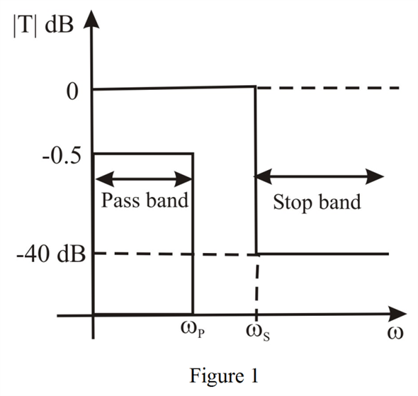
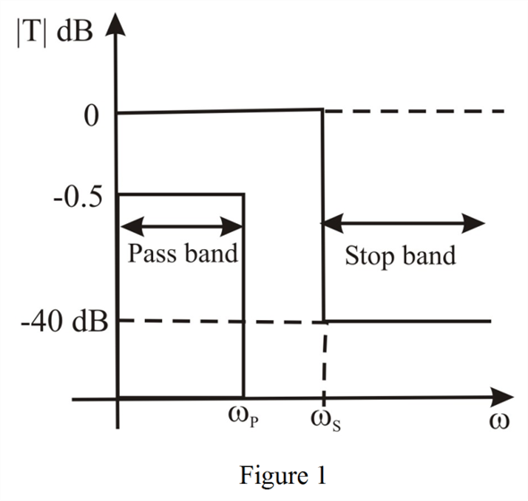

The magnitude curve for different frequencies is shown in Figure 1.


Refer to Figure 16.3 in the textbook for the specification of the transmission characteristics of a low-pass filter.
The maximum allowed variation in passband transmission is,
The minimum required stopband attenuation is,
.
From the Figure, the magnitude at at is zero.
Thus, the magnitude at is, .
The magnitude at is,
Thus, the magnitude at is, .
The magnitude at is,
Thus, the magnitude at is, .
The magnitude curve for different frequencies is shown in Figure 1.
